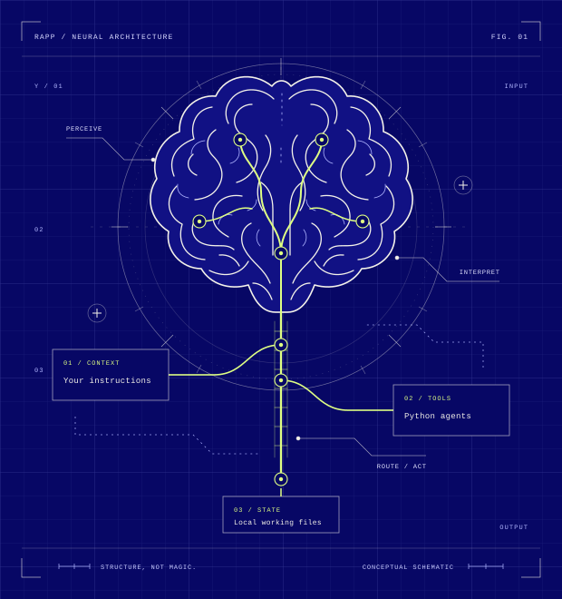

macOS / Bash
curl -fsSL https://kody-w.github.io/rapp-installer/install.sh | bashMay install Homebrew or request Xcode command-line tools. Inspect the installer
A local-first agent engine
Your instructions. Your tools. Your machine.
Connect them with a Brainstem, and put your AI to work.
Runs locally. Extends with Python. Built to be yours.

01 / MAKE THE CONNECTION
Choose your platform. Review the installer. Run the command.
curl -fsSL https://kody-w.github.io/rapp-installer/install.sh | bashMay install Homebrew or request Xcode command-line tools. Inspect the installer
curl -fsSL https://kody-w.github.io/rapp-installer/install.sh | bashPython setup supports apt and dnf. Some distributions need manual prerequisite setup. Inspect the installer
irm https://raw.githubusercontent.com/kody-w/rapp-installer/main/install.ps1 | iexDocumented setup: Windows 11 with winget. Run in PowerShell, not Command Prompt. Inspect the installer
Grail stable edition · Existing upstream installer · Follows the production main branch
02 / ANATOMY OF AN AGENT
A small engine connecting the instructions you write, the tools you add, and the working state on your machine.
Give your agent a way of working. Edit its soul.md instructions to define its role, priorities, and approach.
A plain-text starting point. Your direction.
Add capabilities as Python agent files. Brainstem discovers them on each request, so new tools don't need a server restart.
Small files. Real functionality.
Run the engine on your machine with local agent storage. The browser is your interface, not a separate hosted workspace.
Local runtime. Remote model inference.
03 / FROM INTENT TO ACTION
Here's the shape of a tool-backed conversation: a request becomes an agent call, and its result comes back into the conversation.
Illustrative walkthrough
Sample data, not a live agent. This example assumes you've added an appropriate notes agent.
Save a note: the next prototype should put accessibility first.
Your notes agent receives the request.
notes_agent → saveNote saved: “Put accessibility first in the next prototype.”
04 / BEFORE YOU BEGIN
RAPP Brainstem is a local-first AI agent engine. It connects instructions, Python tools, and model inference through a local server and a browser-based chat interface. You define what the agent should do and which capabilities it has.
A GitHub account with Copilot access. Setup includes a sign-in flow. A GitHub account alone does not guarantee access, and provider plans and usage limits apply. Core chat does not require a separate provider API key.
No. The runtime and agent storage are local, but model inference uses a remote service. Conversation content and tool results used for inference can leave your machine. Tools you add may also contact external services. Review them before use.
Yes. Edit the soul.md instructions and add Python agents following the documented agent interface. Agent files are discovered on each request. Only add code you trust: these tools run with your local user's permissions.
Rerun the existing installer for your platform. These commands follow the upstream production main branch; they are not frozen downloads. Review upstream changes and back up your customizations before updating.
Start with the setup documentation. For runtime problems, search or open an issue in the upstream issue tracker. This is a community project, not a Microsoft support channel.
YOUR MACHINE. YOUR DIRECTION.
Start with the core. Make it your own.